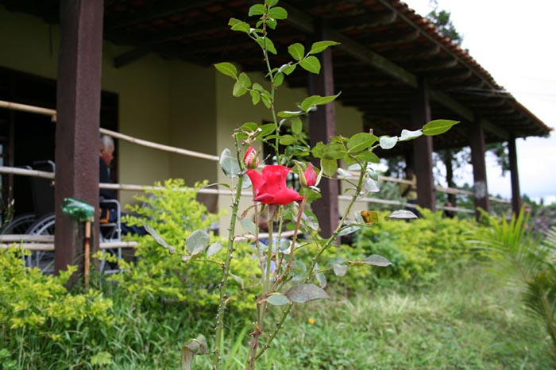

|
Projetos Futuros
Expansão predial:
Ampliar suas instalações para acomodarem mais internos e abranger as atividades físicas e mentais com construção de oficinas de artesanato, marcenaria dentre outras.
Construção de uma lavanderia
Construir uma lavanderia nas dependências da instituição afim de reduzir custos e tempo. Possuirá equipamentos industriais de média produtividade.
Inclusão de novos profissionais
Contratação de novos profissionais a fim de melhorar o atendimento e proporcionar um maior bem estar do interno. Serão contratados: Assistente Social, Psicólogo, Terapeuta Ocupacional e "Oficineiros" (pessoas que ajudaram os internos nas atividades manuais de artesanato dentre outros).
|
 |